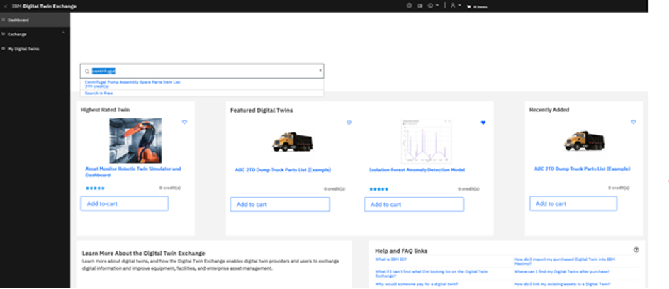
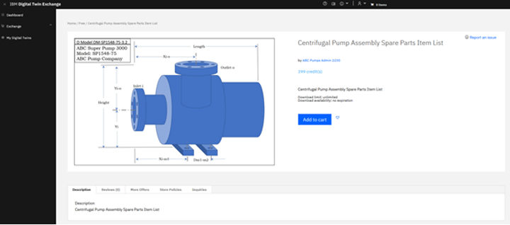
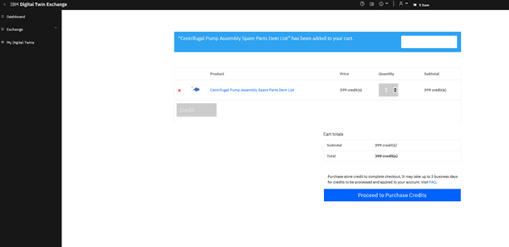
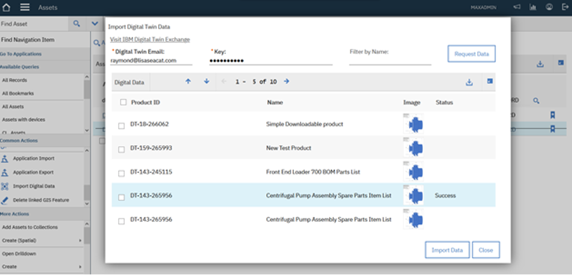
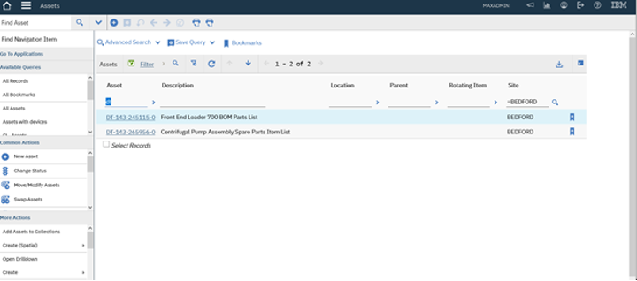
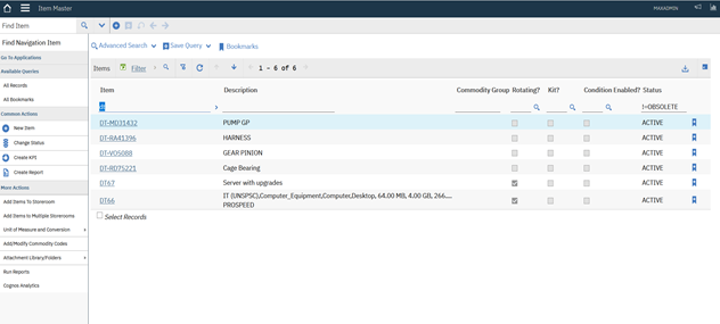

Digital Twin Exchange - Manage Lab (Under construction)
Note
Please follow the Action statements to navigate the steps and perform the lab.
An asset manager, I can leverage the Digital Twin Exchange to purchase various artifacts related to an asset. The contents that are available in the Exchange range from simple asset related artifacts such as BOM, job plan and spare parts to AI model that you can deploy on other applications such as Monitor and MVI. The exchange also has the capability to import the purchased content to the Manage. I am going to browse through the artifacts available on the exchange and find contents related to a Centrifugal pump to import into Manage . You can also see the data models for the data scientist such as the isolation forest model that helps to detect anomalies in Monitor’s data.
Digital Twin Data
Action: Show how to browse the DTX and browse through the contents. Purchase a job plan and spare parts list related to a centrifugal pump- use the dev environment.
- Click this link for DTX.
- Browse the Exchange and highlight the Isolation Forest Anomaly Detection Model as an artifact that feeds into Monitor to detect anomalies in the monitored asset
- Type
centrifugalin search to look for relevant asset data in the Exchange - Choose
Centrifugal Pump 12 month Job PlanandCentrifugal Pump Assembly Spare Parts Item, add to basket - Checkout and purchase(verbally)
  
The availability of digital contents and integration between the DTX and Manage helps me save time and effort locating and registering the relevant information as well as ensuring the accuracy of the data If you are a provider of the contents, the DTX allows you to monetize on the digital contents such as data models, asset related information and IP some of which you have seen in our demo for Monitor and MVI.
Import into Manage
Action: Show how to import purchased job plan and the spare parts list into Manage
- Log in to Manage.
- Go to Assets
- Click
Import Digital Dataunder Common Actions - Select Data Source
Digital Twin - Type in
Digital Twin EmailandKey - Click
Request Data - Verify purchased DTX contents
- Choose
Centrifugal Pump 12 month Job PlanandCentrifugal Pump Assembly Spare Parts Item - Click
Import Dataand confirmSuccesson the status - Go to Job Plans and search Job Plan with
DT, confirm the imported job plan - Go to item master and search the item with
DT, confirm 4 items are imported
  
TRANSITION: I’m going to turn it over to the technician who is assigned to work on the pump.
Alert
After each demo, please clean up the imported items from the Maximo instance.